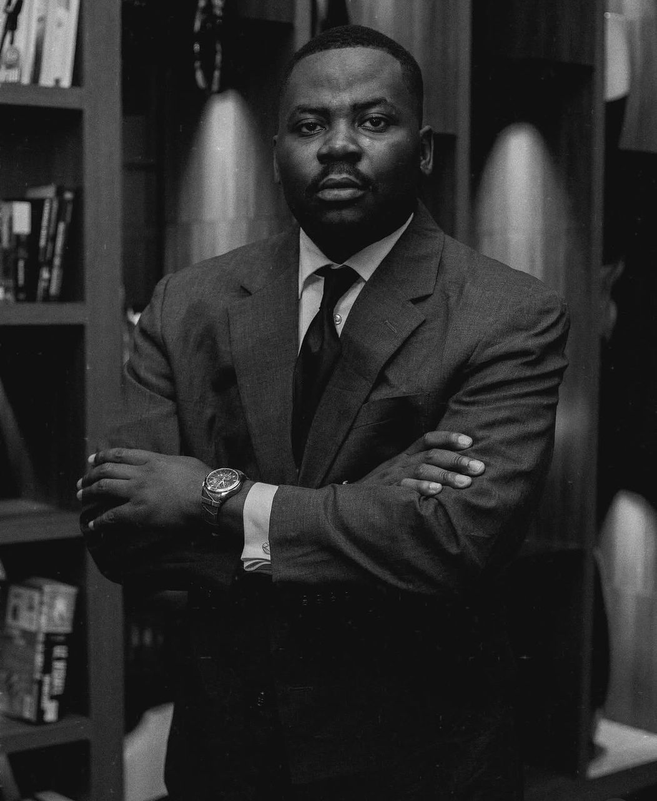
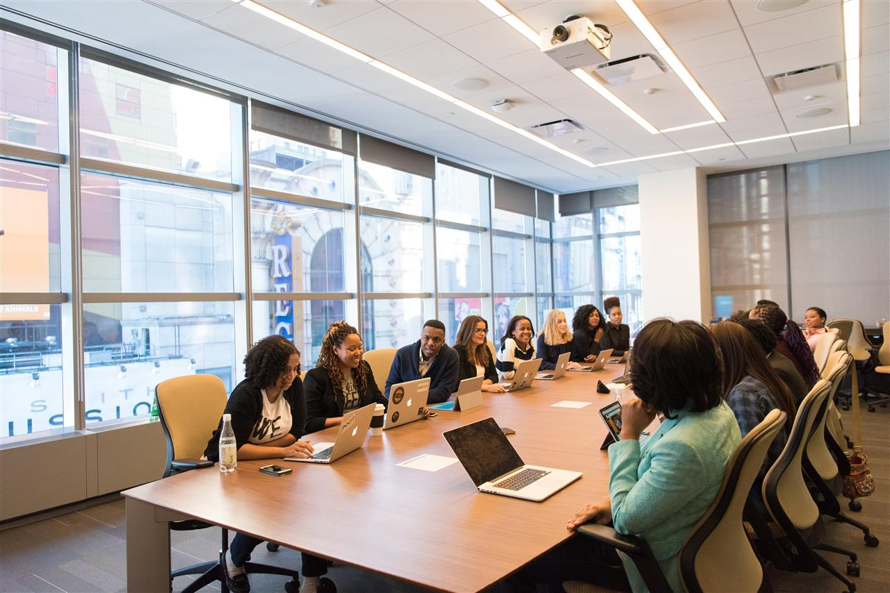
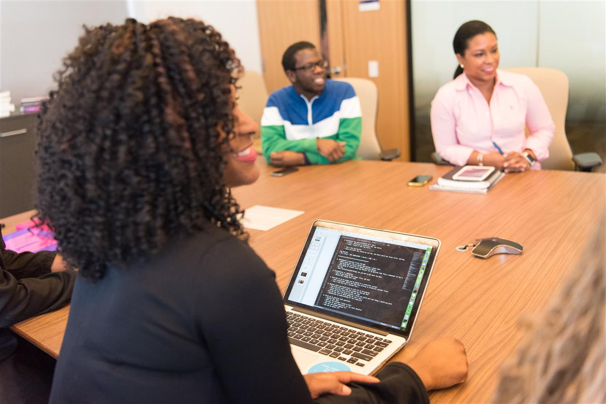
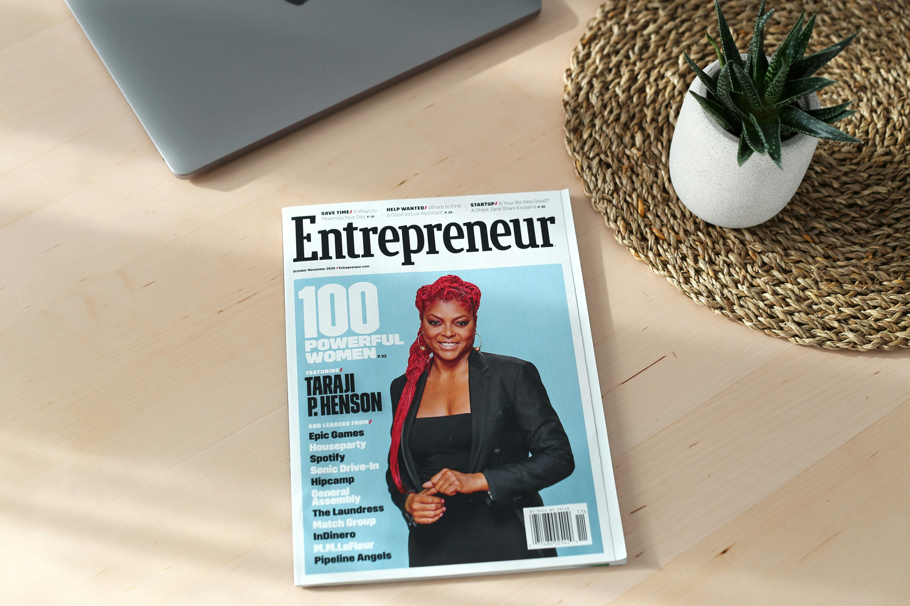

Derniers articles

Patrice Lumumba croyait en un Congo beau et prometteur...
Au milieu du tumulte, il voyait plus loin que le chaos.
Il voyait un peuple debout. Une nation consciente de sa valeur. Un Congo maître de son destin.
Voir la beauté de l'avenir, c'est avoir la force de bâtir. Aujourd'hui, cette responsabilité nous appartient. À nous de transformer l'espoir en action, la vision en projets et le potentiel en prospérité.
Le Congo sera beau... si nous décidons de le rendre grand.
#CL2K26

Nos pères ont porté le poids du silence.
Ils se sont levés avant l’aube.
Ils ont travaillé quand personne ne regardait.
Ils ont porté des responsabilités que personne n’applaudissait.
Avant nos diplômes, il y avait leurs sacrifices.
Avant nos ambitions, il y avait leurs renoncements.
Ils ont construit avec leurs mains ce que nous avons parfois la chance d’imaginer avec nos idées.
Ils n’avaient pas toujours les opportunités.
Mais ils avaient la dignité du travail et la force de tenir.
Aujourd’hui, notre génération ne peut pas seulement hériter.
Elle doit élever cet héritage.
Car honorer nos pères ne signifie pas seulement se souvenir…
Cela signifie aller plus loin qu’eux.
Transformer leur courage en vision.
Transformer leur endurance en création.
Transformer leurs sacrifices en opportunités pour toute une génération.
Leur silence était une force.
Notre mission est d’en faire un avenir plus grand.
Créer des opportunités, bâtir l’avenir.
On nous a formés à chercher un emploi…
Mais qui va créer les emplois ?
Depuis des générations, le message est resté le même :
« Étudie bien pour avoir un bon travail. »
À l’école, on nous apprend à réussir aux examens.
À l’université, on nous prépare à obtenir un diplôme.
Dans nos familles, on nous encourage à chercher un emploi stable.
Mais une question fondamentale reste souvent sans réponse :
Si tout le monde cherche un emploi… qui va les créer ?
Une mentalité héritée
Dans beaucoup de pays africains, y compris en RDC, le système éducatif a longtemps été orienté vers la formation de demandeurs d’emploi plutôt que de créateurs d’emplois.
L’objectif implicite était clair :
Obtenir un poste dans l’administration, dans une grande entreprise ou à l’étranger.
Mais le marché du travail a changé.
Les opportunités sont limitées.
Le chômage des jeunes augmente.
Le nombre de diplômés dépasse largement le nombre d’emplois disponibles.
Le vrai défi : changer de mentalité
Le problème n’est pas le manque de talent.
Le problème n’est pas le manque d’intelligence.
Le problème est souvent le manque d’orientation entrepreneuriale.
On nous apprend à exécuter.
On nous apprend à postuler.
On nous apprend à attendre.
Mais on nous apprend rarement à :
• Identifier un problème
• Créer une solution
• Construire une entreprise
• Générer de la valeur
Créer au lieu d’attendre
Un pays ne se développe pas uniquement avec des chercheurs d’emploi.
Il se développe avec des bâtisseurs, des innovateurs, des entrepreneurs.
L’entrepreneuriat ne signifie pas que tout le monde doit créer une grande entreprise.
Cela signifie développer une mentalité :
• Voir les opportunités là où d’autres voient des problèmes
• Transformer un talent en activité
• Passer de l’idée à l’action
L’avenir appartient aux créateurs
Le futur économique de notre pays dépend de notre capacité à former une génération capable de créer.
Créer des entreprises.
Créer des solutions.
Créer des emplois.
Il est temps d’ajouter une nouvelle phrase à notre système éducatif :
« Étudie bien pour comprendre le monde…
mais apprends aussi à le transformer. »
Parce que si nous continuons à former uniquement des chercheurs d’emploi,
nous continuerons à dépendre des opportunités créées par d’autres.
Mais si nous formons des créateurs d’emplois,
nous construirons notre propre avenir.
Le diplôme ne suffit plus
Pendant longtemps, on nous a fait croire qu’un diplôme était la clé du succès.
« Travaille bien à l’école. »
« Obtiens ton diplôme. »
« Tu trouveras un emploi. »
Mais aujourd’hui, la réalité est plus complexe.
Chaque année, des milliers de jeunes sortent diplômés.
Chaque année, le marché du travail ne peut pas tous les absorber.
Alors une question s’impose :
Le problème est-il le manque d’emplois… ou le manque de créateurs d’emplois ?
L’erreur du système
Notre système éducatif a été conçu pour former des employés compétents.
Pas des entrepreneurs.
Pas des innovateurs.
Pas des créateurs de solutions.
On nous apprend à répondre correctement aux questions.
Mais rarement à poser les bonnes questions.
On nous apprend à suivre des instructions.
Mais rarement à prendre des initiatives.
Et si on changeait la trajectoire ?
Imaginez un jeune qui, en plus de son diplôme, sait :
• Identifier une opportunité
• Monter un projet
• Gérer un budget
• Vendre une idée
• Construire une équipe
Ce jeune ne dépend plus uniquement d’un recrutement.
Il devient une opportunité pour les autres.
Le vrai développement commence ici
Un pays progresse lorsque sa jeunesse ne cherche pas seulement à être embauchée…
mais à bâtir.
L’entrepreneuriat n’est pas une alternative pour ceux qui échouent.
C’est une voie stratégique pour ceux qui veulent impacter.
Nous devons arrêter de dire aux jeunes :
« Cherche un emploi. »
Nous devons commencer à leur dire :
« Crée de la valeur. Résous des problèmes. Bâtis quelque chose. »
Parce que le développement d’un pays ne dépend pas seulement de ses diplômes.
Il dépend de sa capacité à transformer ses talents en entreprises.
Quand les parents étouffent les talents de leurs enfants
Beaucoup de talents ne meurent pas par manque de capacité.
Ils meurent par manque de soutien.
Combien d’enfants aiment le football,
mais on leur dit :
« Le foot ne nourrit pas. »
Combien aiment chanter,
mais on leur répond :
« La musique n’est pas un métier sérieux. »
Combien aiment dessiner, créer, inventer,
mais on leur impose :
« Tu seras avocat. Tu seras médecin. Tu seras fonctionnaire. »
Une créativité naturelle
Chaque enfant naît avec une forme de créativité.
Un don.
Une passion.
Une sensibilité particulière.
Ce n’est pas un hasard.
C’est une capacité unique.
Mais très souvent, au lieu d’être cultivée,
elle est corrigée, comparée, étouffée.
On veut sécuriser l’avenir de l’enfant.
Mais parfois, en voulant le protéger, on le limite.
Le vrai danger
Le danger n’est pas qu’un enfant tente sa passion.
Le danger est qu’il grandisse frustré.
Un talent ignoré devient une frustration.
Une passion interdite devient un regret.
Un rêve brisé devient une vie subie.
Beaucoup d’adultes aujourd’hui travaillent dans des domaines qu’ils n’aiment pas.
Pas parce qu’ils n’avaient pas de talent.
Mais parce qu’on leur a appris à abandonner ce qu’ils aimaient.
Encourager ne veut pas dire forcer
Soutenir un talent ne signifie pas abandonner les études.
Cela signifie accompagner, orienter, structurer.
Un enfant peut aimer le football et être discipliné.
Il peut aimer la musique et apprendre la gestion.
Il peut aimer créer et développer des compétences solides.
Le talent n’est pas l’ennemi de la réussite.
Il peut en être la base.
Une responsabilité collective
Les parents veulent le meilleur pour leurs enfants.
Mais le meilleur n’est pas toujours ce qui est le plus traditionnel.
Le monde a changé.
Les opportunités ont changé.
Les carrières ont évolué.
Un pays progresse quand il laisse sa jeunesse exprimer son potentiel.
Un enfant soutenu devient un adulte confiant.
Un talent accompagné devient une compétence.
Une compétence développée peut devenir une richesse.
Nous ne devrions pas demander aux enfants d’abandonner leurs rêves.
Nous devrions leur apprendre à les structurer.
Parce qu’un talent soutenu peut changer une vie.
Et une génération encouragée peut changer un pays.
Le Congo que je veux
Je rêve d’un Congo différent.
Un Congo debout.
Un Congo qui croit en lui.
Comme le disait Frantz Fanon,
l’Afrique a la forme d’un revolver…
et la gâchette se trouve en RDC.
Cela signifie une chose :
si le Congo se lève, l’Afrique avance.
Si le Congo échoue, l’Afrique vacille.
Nous ne sommes pas un petit pays sans importance.
Nous sommes un pays stratégique.
Un pays riche.
Un pays central.
Mais la vraie richesse d’un pays ne se trouve pas seulement dans son sol.
Elle se trouve dans son peuple.
Le Congo que je veux
Je veux un Congo où il y a du travail pour tout le monde.
Pas seulement des diplômes accrochés aux murs.
Pas seulement des CV envoyés sans réponse.
Je veux un Congo où les jeunes ne cherchent pas seulement un emploi,
mais créent des solutions.
Un Congo où chaque problème devient une opportunité.
Un Congo où l’innovation remplace la plainte.
Un Congo où l’initiative remplace l’attente.
Un Congo beau
Comme le disait Patrice Lumumba,
nous voulons un Congo beau.
Beau par son unité.
Beau par son intelligence.
Beau par son travail.
La beauté d’une nation ne vient pas seulement de ses paysages.
Elle vient de la dignité de son peuple.
La responsabilité de notre génération
Nous sommes la génération qui ne peut plus attendre.
Attendre que l’État fasse tout.
Attendre que l’étranger investisse tout.
Attendre qu’un miracle arrive.
Le changement commence par nous.
Par notre discipline.
Par notre travail.
Par notre capacité à créer.
Travailler pour un Congo nouveau
Le Congo que je veux ne viendra pas par les discours.
Il viendra par l’action.
Quand un jeune lance une entreprise.
Quand une femme développe son activité.
Quand un étudiant transforme son idée en projet.
Quand un leader forme une équipe compétente.
C’est ainsi qu’un pays change.
Le Congo n’a pas besoin seulement de critiques.
Il a besoin de bâtisseurs.
Il a besoin d’une jeunesse qui comprend que l’avenir ne s’attend pas…
il se construit.
Le Congo que je veux commence aujourd’hui.
Et il commence avec nous.
Atelier sur la gestion financière pour les PME : Les fondamentaux
La Clinique de l'Entrepreneuriat a organisé un atelier intensif sur la gestion financière destiné aux propriétaires de PME. Les participants ont appris à établir un budget prévisionnel, gérer leur trésorerie et optimiser leur fonds de roulement. Cet atelier pratique a réuni 45 entrepreneurs de Kinshasa.
Durée de lecture : 4 min
Lire la suite →
Comment structurer votre entreprise en 2026
Les clés pour structurer efficacement votre PME et préparer sa croissance durable...
Lire la suite →Témoignage : Comment j'ai lancé mon entreprise
Parcours d'un entrepreneur accompagné par La Clinique de l'Entrepreneuriat...
Lire la suite →
Forum de l'Entrepreneuriat Kinshasa 2025
Retour sur le plus grand forum entrepreneurial de l'année en RDC...
Lire la suite →
Programme de formation des formateurs
La Clinique lance un programme de formation des formateurs pour renforcer les capacités...
Lire la suite →Les 5 erreurs à éviter quand vous startpez
Conseils pratiques pour éviter les pièges courants de l'entrepreneuriat...
Lire la suite →